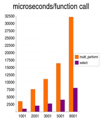
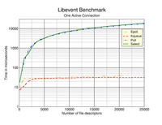

MARKDATE(October 12 2006) I've been working with Jeff Pohlmeyer lately and
we've now agreed that adding a CURLMOPT_TIMERFUNCTION is a good idea. There's
a funny angle to this, as we once had a timeout info in the socket
callback... but I think this is the better way as the timeout in libcurl
really isn't tied to a single socket.
Note that all this work is now done in the plain standard libcurl CVS, so you
can stop reading this special hiper section and just track the normal libcurl
development!
Since HTTP pipelining support is already added to CVS too, project hiper
is really close to having reached its goals. We just need a release now!
Note that the "new" item I wanted to add in this project, the zero-copy
interface, has been scrapped for now. It wasn't present in my original plan
and there's been very little demand from the outside world. Also, it should be
fairly easy to implement anyway as it doesn't involve much complexities but is
more or less just "straight forward" coding.
STOP
MARKDATE(July 27 2006) I added curl_multi_assign() today that tells libcurl to
associate a given custom pointer with a socket that libcurl has told the
application about. I also added that custom pointer to the callback proto so
that applications easier can map incoming "action" to a particlar struct or
so, without having to implement a hash table of its own - since libcurl
already have and use such an hash table.
STOP
MARKDATE(April 10 2006) Recent changes broke the hiper patches several times
and I've decided to make an effort to merge the hiper patch with HEAD of the
curl repository. Not because it is exactly ready to fly, but mostly since I
find it too much work to keep the patch working separate from main line.
Started with adapting the test suite to always build with what I need for
hiper tests.
Moved on to commit the public header file changes.
Committed the lot during the evening. Posted an info mail about it.
STOP
MARKDATE(Feb 19 2006) The recently committed CONNECT_ONLY feature broke the
previous patch again. hiper-9.patch is
now against the current CVS.
STOP
MARKDATE(Feb 2 2006) Hm, the previous patch doesn't apply cleanly anymore so I
uploaded hiper-8.patch.
STOP
MARKDATE(Jan 16 2006) hiper-7.patch
introduces curl_multi_setopt to set
the socket callback, to allow other functions than just the *multi_socket()
ones to cause the callback to get called.
STOP
MARKDATE(Jan 7 2006) Sun Yi-Ming's comments also made me realize that we need
to better take care of the socket state for sockets that are used by more
than one easy handle. The "check for socket change" within the multi code
currently doesn't...
I've decided to add a curl_multi_setopt function and let that set the
callback function and userp pointer, to better allow the callback to get
called even when easy handles are removed from a multi handle etc. Hm, that
was even quickly implemented and all code have been adjusted accordingly.
Now I need to adjust the check-socket-state-changing function to better deal
with easy handle removal and that more than one easy handle may use the same
socket... I'll save that for another day.
STOP
MARKDATE(Jan 6 2006)
hiper-6.patch is 88K and now contains the test
case files I've been using.
Some shortcomings in
the API have been pointed out, and I have a suggestion on how
to solve the problems!
STOP
MARKDATE(Jan 5 2006)
Status Report
posted to curl-library. I'm not sure when this work will continue full-time
again, but possibly around March/April or so.
hiper-5.patch is 84K
STOP
MARKDATE(Jan 4 2006) I wonder if the easy handle passed to the callback will
ever be used by an application properly since when an action happens on a
socket later on, the app would basically need a hash table lookup to figure
out the easy handle to pass in. And since we want the easy handle pass-in to
be optional, we still need to provide exactly that hash lookup code in
libcurl... I feel tempted to remove the easy handle from the callback and curl_multi_socket() prototypes
for this very reason.
We already have hash lookup code within libcurl, written and provided a long
time ago by Sterling Hughes and used for the DNS cache. I'll need to
investigate how we can re-use those functions to provide a socket-to-easy
handle lookup.
The lookup will actually become a "one socket to one or more easy handles"-
lookup (1:N) since in the c-ares case more than one easy handle might be
waiting for the response on the same c-ares socket (when doing asynch DNS
resolving). We'll just have to accept this fact and adjust accordingly.
The fact that the lookup is a 1:N one is another factor that makes me lean
towards removing the easy handle from the prototypes since I guess we risk
that applications would implement the lookup 1:1 and get into trouble.
A few hours later...
I decided to follow my earlier instinct and I've now removed the 'easy'
argument from the curl_multi_socket() function. It didn't serve any useful
purpose.
I added the hash table lookup and now I think most of the API is in place and
at least working partly. I need to do more (extensive) testing before I can
be really sure of everything.
STOP
MARKDATE(Jan 3 2006) Splay code added and it seems to build nicely sorted
trees. I implemented curl_multi_timeout() and it
uses the splay system just fine!
The added bonus here is also that curl_multi_timeout() will work
nicely for good old curl_multi_perform()-using
applications.
I think that the main thing I still haven't addressed is to add a hash table
for the case when you get action on a socket and you call curl_multi_socket() without
having a proper easy handle to pass in. It must map socket(s) to easy handle.
Hm, for the c-ares using case, can there perhaps even be more than one easy
handle waiting for action on the same (dns) socket? Yes I think so and that
certainly makes things slightly trickier.
STOP
MARKDATE(Jan 2 2006) Had a refreshing week of holiday and got back to work
today.
Started the day by making sure the existing code base could run the
existing test suite 100% OK. I want to have the code in a good shape by the
end of the week, as I'm not sure when I'll get back to this work again
(hopefully sometime this spring).
Removed the timeout argument from the socket callback now, as I mentioned
before and in this
mail.
Started working on curl_multi_timeout() now. I need to make a sorted list
of all expire-times for a single multi handle to get this done fast
enough... I started working on some splay code I wrote for 8-9 years ago that
should be fine enough for this purpose (the date in my original source file I
found said "March 5 1997" - which happens to predate curl with over a
year...). It started to work during the afternoon. Now I'll just need to go
over the libcurl code and make sure we store the expire-time for all timeouts
all over so that we can make wait as long as possible before a libcurl
function gets called.
Updated the curl_multi_socket() man page and
created the first man page for curl_multi_timeout().
hiper-4.patch is 56K and applies to CVS libcurl
only. Requires CVS c-ares (if you opt for a c-ares build).
STOP
MARKDATE(Dec 22 2005) I can now properly run tests with several hundred
connections using curl_multi_socket() and it works. The lack of timeout
support of course hampers it but my test case doesn't reveal this. At the
moment, a single call to curl_multi_socket() on an active and readable
connection seems to average around 7 usec.
I'm a bit disturbed that select() is acting up on me. When I set a huge
amount of bits in the read and write sets, and call select() it can return a
value that is not the same amount of bits set in the read and write
sets as I'm pretty sure it is designed and documented to do. Also, it seems
to set bits in the writable set for sockets I didn't ask to get checked for
writability, so in my "libevent-emulation" I now need to only check sockets
for write readiness if libcurl has specifically asked for it as otherwise we
call curl_multi_socket() too often...
I'm (yet again) having second thoughts on how to deal with the timeouts. I
want to avoid having to call the callbacks and update the timeout on all
sockets and I don't want the timeout to be socket-based since there might be
more than one socket for a single easy handle and I'd then rather just call
curl_multi_socket() once and have that sort out what sockets to use. At the
same time it seems that libevent has its timeouts on a per-socket basis (not
surprisingly really) so if I don't do them per-socket, how are we going to
use libevent (etc) efficiently? Then of course, there's a separate timer
mechanism in libevent that might be useful.
hiper-3.patch is now at 60K. Make sure you apply
it to a fresh CVS, it is not applying cleanly to 7.15.1... I did commit parts
of my work, to make it easier to point out web versions of the docs for the
new functions. See curl_multi_socket() and ares_getsock().
STOP
MARKDATE(Dec 21 2005) Regarding the time-outs, I think I'll just make sure
that libcurl keeps a I-want-to-get-called-no-later-than-this time ("last
time") for each easy handle, and then the callback will be called with a
timeout set to ("last time" - now) for all sockets in the easy handle's care.
I think that'll work out nicely. No code written for this yet though. The
main quirk to figure out for this approach is how the *socket() callback is on
a per-socket (file descriptor) basis, while I want the time-out stuff to be on
a per easy-handle basis...
Oh, and curl_multi_socket() in the hiper-1 patch doesn't work. I'll provide
an updated patch at the end of this week as I'll be away most of next week
and then won't work on this again for real until next year.
Wrote up the first draft of man page for the curl_multi_socket functions.
STOP
MARKDATE(Dec 20 2005) Time to sum up what we have:
hiper-1.patch is the first 60K something patch to
try out if you feel brave and want something to do. Define
HAVE_CURL_MULTI_SOCKET in your build to make it all go smooth. This change
also includes the new ares_getsocks()
function.
Internally, we now report back plain sockets everywhere instead of the
previous fd_sets. The new callback style information in the *socket()
interface seems to work at least for the simple test case setup I'm
using. The downside of this new interface is that the callback style
information we get is adding code to the application for keeping track of an
unknown amount of sockets to wait for action on. Also, since I'm unfamiliar
with libevent I thought I'd first make an app that still uses select() even
though it uses the new API and it sure is somewhat awkward. I trust this will
feel a lot better once I start using libevent for real.
My first very simple test app using the new socket is working. I'll extend it
to use curl_multi_socket() properly only on the sockets with action, so I'll
let the app do the loop to check for actions on the sockets.
The implementation so far has two tricky areas:
- The function that checks what sockets a particular handle should wait for
action on, and how they differ from "last". As libcurl must call the callback
for all changes.
- Timeouts. The multi interface has so far gotten away with a documented
"call the perform() function every once in a while not too long in between"
(like maximum 5 seconds interval), so that timeouts and retries etc can be
done properly. While I think I'll duck for the problem a while more and have
my test app do curl_multi_socket_all() every 5 seconds, it isn't a nice
fix. We must make sure that the code keep track of timeout times for each
handle and that it can call the callback to set them properly when they
change.
STOP
MARKDATE(Dec 14 2005) I'm working on imlementing code for the new API. I've
now re-arranged the internals to report back plain sockets all over instead of
fd_sets and the old test code seems to work still! I need to write up a proper
client that can actually use the new API now to be able to start squashing
bugs.
As a little side-note I added another little measurement of the existing test
app that is quite revealing. If I still read only one byte per read() and I
measure the amount of usec spent for each byte read when having 0 idle and 1
active compared to 2000/1, the spent time per byte goes from 5usec to
9626usec! It matches the math and the previous results, as it is just about
2000 times slower...
STOP
MARKDATE(Dec 9 2005) I consider this round of tests to complete my first
investigation and measure phase in which I've carefully studied how an
applicaton performs with the existing API and the accompanying "enforced" use
of select().
I worked around the 1024 connection limits for both
server and client side. I built the test program and ran it to use a single
active connection and N number of idle ones (idle meaning the server never
repsonds with any data, it just keeps the connection alive).
The results were pretty much as I had imagined, and I'm pleased with the test
setup and the stable and repeatable test numbers. Due to the amount of RAM in
my test box, and the amount of memory required for each single connection in
both the client and server (since they were running on the same box), I
stopped testing at 9000 simultaneous connections since doing more would've
forced use of swap and killed all reliable results.
I ran the test client with 1001, 2001, 3001, 5001 and 9001 connections and
measured how long select() and curl_multi_perform() would take in average,
over a period of 20 seconds. Each read call in libcurl would only read one
single byte, so thus we are sure that the active connection will be
"readable" in the select() sense during the entire test. It also ensured that
there would be no significant time spent in the read() call itself. The
read() overhead is thus also constant in all the tests.

The exact numbers of the graph are:
Connections multi_perform select
1001 3504 951
2001 7606 1988
3001 11045 2715
5001 16406 4024
9001 32147 8030
Each time above is in microseconds and is the average time of 5 or 6 test runs.
What do I hope for in new "socket" extension of the multi API, in pure
numbers in comparison to graph above using a test that is identical "in
spirit"? (using curl_multi_socket() instead of curl_multi_perform())
- Time spent in curl_multi_socket() should be (more or less) fixed no
matter how many idle connections that are used. I sincerely hope that means
less than 10 microseconds in this test setup.
- The select() benchmark graph below suggests that libevent is pretty much
fixed at 50 microseconds (although I don't know what test box was used in
their testing, we can compare the select()-times from my tests and see that
they are at least resonably close).
- Summing up, the collected ~40 ms spent at 9000 connections could possibly
be lowered to something around 60 us!
I should perhaps add that the curl_multi_fdset() invoke is also included in
the multi_perform() time, so there are two loops going over all
descriptors. One to set bits in the fd_set variables and one to check all
bits of the fd_set variables. So at 32000 us for 9000 connections, it loops
18000 laps which makes less than 2 microseconds per lap. (Of course counting
time/laps is an oversimplification, but anyway...)
STOP
MARKDATE(Dec 7 2005) Different test/measure approach:
I now have a local HTTP server that can serve two modes: idle and
active. The idle mode does nothing after it accepted the client's request,
while the active mode sends a never-ending stream.
The application now does X connects using idle mode and Y using active, and
then measure how long each call to select() and curl_multi_perform() takes
with a varying amount of idle connections added.
Of course I hit some minor quirks having to avoid the varios 1024 file
descriptor limits: the FD_SETSIZE default define is 1024 (limits how many
descriptors select() can use) and a user process defaults to allowing max 1024
file descritors. Working to smooth them out to be able to run tests using
1000, 2000 and 5000 idle connections with a single active one.
STOP
MARKDATE(Dec 6 2005) I committed my currently used code to CVS: cool.haxx.se/cvs.cgi/curl/hiper/
- not terribly much to see but I wanted to added it to make it easier for me
to keep older versions around. This doesn't include the (minor) changes to
libcurl I've done so far but none of those changes are required for this to
run/work.
Ok, I think I'll change my measuring approach and I will
instead write up my own HTTP server and control that to allow it to either
sit perfectly quiet (just keeping the connection alive) or to send an endless
stream of data. By allowing the selection of behaviour be based on the URL, I
should be able to modify my test program to run and test a given number of
"active" connections with a given number of "existing connections". I guess
the real-world URLs are too hard to use to make adequate tests with.
I found this little benchmark on select() performance compared to other event
systems:

I've been struggling to get a test program that can be used
to measure and show the current overhead/speed in a good way. I've been quite
surprised by the speed of the existing implementation. My test application
easily initiates and transfers 2000 simultaneous transfers (and man does this
work nicer with a c-ares built libcurl!). The average time spent for each
curl_multi_perform() in these cases is easily measured, but it is not easily
to draw any specific conclusions. With 50 simultaneous connections, the
average time per invoke is less than 600us on my Athlon XP2800 Linux
2.6/glibc 2.3.5/libcurl 7.15.1 test setup.
Some more numbers from the tests. I have a list with a few thousand URLs that
the test app reads from and starts transferring data from. See below for more
descriptions.
Total time 108149477us - Paused 12906983us = Active 95242494us = Active/total 47621us
Active/(connections that delivered data) = 115585us
824 out of 2000 connections provided data
46684 calls to curl_multi_perform(), average 206 alive. Average time: 2040us
45267 calls to select(), average 193 alive
Average number of readable connections per select() return: 172
Max number of readable connections for a single select() return: 549
0 select() timeouts
- Total time - duration of the test. It stops when less than 50
connections are alive
- Paused - time we don't care about, during which select() is called
- Active - time we care about. The total amount spent in curl_multi_perform()
- Active/total - is then the active time split on total number of connections (2000 in this case)
- It is worth noting that not during the test, not a single select() call
timed out. I use a 50ms timeout
- The numbers shown here are quoted from a single test run, but they are
very similar on repeated invokes
I managed to get this very high number of simultaneous connections returned
from the select() call by patching libcurl to only read from connections one
byte at a time!
The test program finally produces a summary that is separated into number of
alive connections. So that we can see the average time curl_multi_perform()
takes when N connections are still alive. I'll show a few lines from the list
(times are in microseconds):
Time 50 connections, average 579 max 2351 (283 laps) average/conn: 11
Time 60 connections, average 673 max 3036 (594 laps) average/conn: 11
Time 70 connections, average 877 max 5402 (566 laps) average/conn: 12
Time 100 connections, average 1134 max 2367 (431 laps) average/conn: 11
Time 150 connections, average 1787 max 3025 (11 laps) average/conn: 11
Time 200 connections, average 2112 max 3843 (74 laps) average/conn: 10
Time 300 connections, average 2901 max 5629 (27 laps) average/conn: 9
Time 401 connections, average 3855 max 8623 (65 laps) average/conn: 9
Time 500 connections, average 4552 max 8409 (25 laps) average/conn: 9
Time 915 connections, average 11700 max 38587 (6 laps) average/conn: 12
Worth noticing is that this splits the time on "alive connections", while we
don't really know how many connections that are readable at any given time
here. The average number shown above does indicate that the amount of
readable connections are fairly high all the time though.
STOP
MARKDATE(Dec 2 2005) Made a script that figuered out a few thousand "random"
URLs.
Started writing a test application using the existing multi
interface. It fetches N simultaneous URLs and measures how long time is spent
in the curl_multi_perform() calls. With "just" 100 simultaneous downloads the
time spent is very small so I guess I need to up the timer resolution and use
many more simultaneous transfers. Since my goal is to increase performance
when very many transfers are in progress I need to somehow weight the
stats counters to consider the amount of current transfers.
I've decided I'll commit/shouw my test program(s) as soon as I have something
that actually show numbers I trust and are reliable.
STOP
MARKDATE(Dec 1 2005) Daniel started working full-time on project Hiper (during
the entire month of December).
STOP
MARKDATE(Nov 29 2005) Mailed the first
quarterly report in Swedish to IIS, about project Hiper. (282KB PDF)
STOP
MARKDATE(Nov 28 2005) Discussing how the "zero copy" interface for
libcurl could work. On the curl-library mailing list.
STOP
MARKDATE(Nov 9 2005) Discussing possible Windows-adjustments to the hiper
concept on the curl-library mailing list.
STOP
MARKDATE(Nov 4 2005) Added the API and Sample app pages here.
STOP
MARKDATE(Nov 3 2005) announced the 'hiper' project to the world, and added
this hiper section of the curl web site.
STOP
MARKDATE(Oct 24 2005) Daniel visited the "Internetdagarna" conference in
Stockholm, Sweden and receives a diploma, a flower and some sturdy handshakes
when the IIS foundation announced that
Daniel will receive 150,000 SEK from their fund. Daniel was notified about
their decision roughly one week before this.
STOP
#include "_footer.html"
{kind=link}
{kind=link}